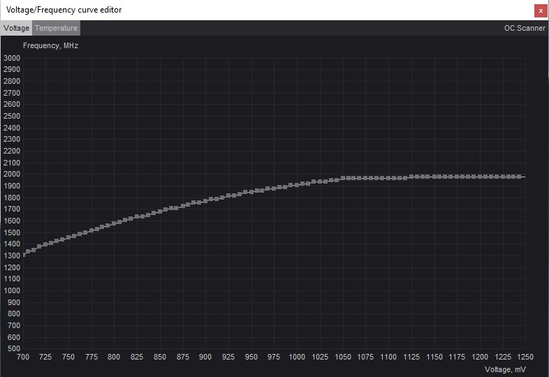

Ta sekcja jest dla zaawansowanych użytkowników. Należy ją traktować jako ciekawostkę. Przed przystąpieniem do wspomnianych czynności prosimy o dokładne zgłębienie tematu z innych źródeł! NIE PONOSIMY ODPOWIEDZIALNOŚCI ZA PONIESIONE SZKODY W WYNIKU POWTARZANIA NIŻEJ WYMIENIONYCH CZYNNOŚCI! Przechodząc dalej akceptujesz ryzyko.
Jak przeprowadzić na karcie graficznej i procesorze
Undervolting to proces polegający na obniżeniu napięcia procesora, karty graficznej lub innego komponentu. Przeprowadza się go w celu zmniejszenia poboru mocy urządzenia. W efekcie daje to lepsze temperatury oraz niższą prędkość wentylatorów (czyli też obniżenie hałasu generowanego przez komputer). Undervolting może okazać się szczególnie przydatny w przypadku drobnych komputerów w formacie mini ITX oraz wydajnych laptopów gamingowych, które pod obciążeniem nierzadko pracują na granicy throttlingu. Proces samego undervoltingu jest zazwyczaj przeprowadzany w taki sposób, aby zachować domyślną wydajność danego podzespołu. Czasami obniżanie napięć idzie jednak w parze z równoczesnym obniżeniem zegarów (tzw. underclocking), co pozwala zaoszczędzić jeszcze więcej energii 2. Całe działanie jest w dużej mierze przeciwieństwem podkręcania, czyli zwiększania zegarów i wydajności kosztem poboru mocy oraz kultury pracy. Undervolting jest bezpieczny dla sprzętu, ale należy pamiętać, że jeśli nie przeprowadzimy undervoltingu prawidłowo, to w systemie mogą pojawić się błędy i problemy ze stabilnością. Właśnie dlatego przed ostatecznym zatwierdzeniem nowych ustawień, należy je zawsze dokładnie przetestować.
Undervolting w przypadku karty graficznej jest najbardziej popularny ze wszystkich podzespołów. Spowodowane jest to przez to, że wiele modelów jest sprzedawanych w wersji OC, które mogą osiągać wysokie temeperatury podczas pracy pod pełnym obciążeniem. Za wysokimi temperaturami idzie również wysoka głośność pracy takiej karty. Dobrze przeprowadzony undervolting może zaradzić tym problemom oraz wydłużyć żywotność naszej karty.
Jeśli chcesz przeprowadzić undervolting swojej karty graficznej, najlepiej wykorzystać do tego aplikację MSI Afterburner. Jest to uniwersalne narzędzie, które działa nie tylko z kartami MSI, ale także z kartami innych producentów. Program wyróżnia się przejrzystym interfejsem i prostą obsługą. Włączenie opcji “Startup” pozwoli załadować zmienione ustawienia już przy starcie systemu.
Uruchamiamy MSI Afterburner, klikamy kombinację klawiszy [Ctrl] + [F]. Powinien pojawić się wykres częstotliwości i napięcia. Z lewej strony zobaczymy zegary karty, a na dole przypisane do niej napięcia.
Szukamy punkciku o interesującej nas wartości częstotliwości karty i stopniowo zmienjszamy na nim napięcie, np. o 50 mV. Następnie kliknij przycisk zatwierdzenia znajdujący się w głównym menu programu.
Testujemy nasz undervolting przy pomocy wybranego benchmarku graficznego, monitorując temperatury i stabliność systemu. Po wykonaniu testów możemy ponownie kontnuować undervolting lub zakończyć proces.
Oto przykładowy film instruktażowy.
Undervolting procesora będzie wyglądał trochę inaczej w zależności od platformy oraz producenta płyty głównej. Ogólne zasady obniżania napięcia są jednak identyczne i najczęściej najistotniejszą zmianą będą różnice dotyczące nazw danych funkcji.
Przechodzimy do zakładki z opcjami dotyczącymi taktowania i napięć procesora - “OC” albo “Tweaker”. Przełączamy tryb sterowania taktowaniami na manualny - np. opcja “CPU Frequency and Voltage (VID) Change”. Ustawiamy taktowanie procesora - Frequency oraz napięcie - Voltage na wartości odczytane w programie CPU-Z. Obniżamy domyślne napięcie o 0,0125/0,025V. Następnie zapisujemy zmiany i wychodzimy z BIOS-U.
Jednym z najlepszych programów do sprawdzania stabilności systemu jest Prime95. Wraz z nim powinniśmy wyświetlać z boku program taki jak HwInfo, aby stale kontrolować poprawność aktualnych temperatur. Taki test pozostawiamy na godzinę lub dłużej, monitorując pracę komputera.
Undervolting jest bezpieczny dla sprzętu, ale należy dokładnie przetestować każdą zmianę, aby uniknąć problemów ze stabilnością systemu. Dlatego ważne jest, aby wykonywać undervolting stopniowo, zmieniając napięcie o niewielkie wartości i dokładnie testując stabilność systemu po każdej zmianie. Pamiętaj, że undervolting może prowadzić do spadku wydajności karty graficznej lub procesora, jeśli napięcie zostanie obniżone zbyt mocno. Dlatego ważne jest, aby dokładnie przetestować stabilność systemu po każdej zmianie napięcia karty graficznej i znaleźć optymalne ustawienia dla swojego sprzętu.